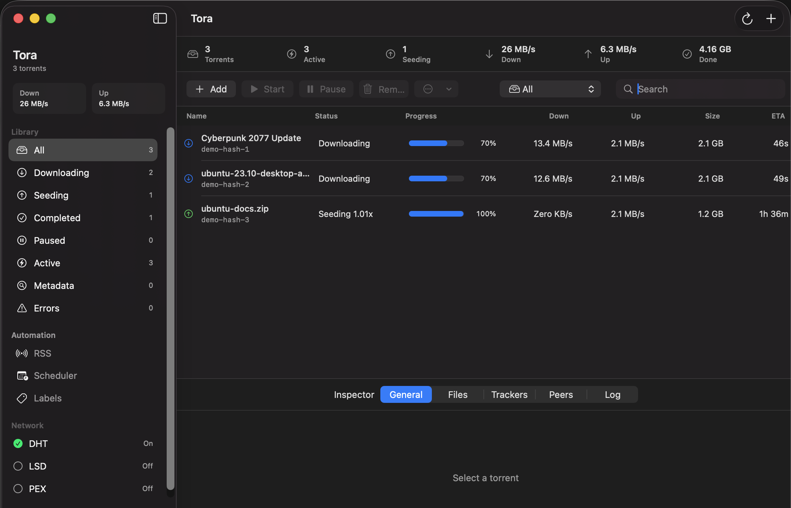

Tora is a premium BitTorrent client built from the ground up for macOS using Swift, SwiftUI, and isolated libtorrent-rasterbar bindings. Designed for performance, safety, and minimalism.
Tora combines premium aesthetics with a bulletproof security architecture.
All download directories are strictly validated before starting. Torrent payloads can never escape boundaries or write to arbitrary system paths.
No heavy Electron wrappers. Tora is ultra-lightweight, energy-efficient, and respects your Mac's battery life with fully native system integration.
Network-discovery defaults are kept strictly off without review. Dynamic library linking is hardened to prevent standard local binary hijacks.
Leverages the industry-standard `libtorrent-rasterbar` engine for robust peer exchange, DHT, encryption, and magnet link handling.
A native macOS interface that feels right at home on your desktop.

Witness the lightweight speed telemetry simulation powered by Tora's engine.